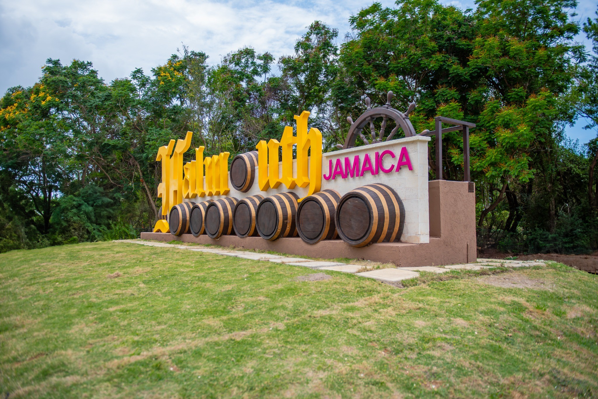

Public Art · Placemaking · Falmouth, Jamaica · 2025
Falmouth
Jam-Iconic Experience.
A sculptural landmark at the entrance to historic Falmouth, bringing the town’s heritage into public space.
The project
Heritage in
public space.
Created by Scheed Cole on Foreshore Road at the entrance to Falmouth, the Jam-Iconic Experience landmark was developed through the Tourism Product Development Company (TPDCo) and the Trelawny Municipal Corporation.
The sculptural installation incorporates nine rum barrels and two interpretive storyboards reflecting Falmouth’s history of sugar and rum production. Unveiled on 28 March 2025, the landmark connects the town’s past to the experiences of residents and visitors today.

The full story · Behind the work
Reading
the landmark.
The interpretive panels extend the story beyond the sculptural forms, giving visitors historical context for the references they encounter. Together, the visual elements and written interpretation introduce aspects of Falmouth’s past through a landmark in everyday public space.
The meaning
At the unveiling, TPDCo described the Jam-Iconic initiative as a way to draw attention to destinations and create places where residents and visitors can take photographs and share their experience. Falmouth was the third installation in the programme, following signs in Montego Bay and Negril.
Location: Foreshore Road, Falmouth, Trelawny, Jamaica.
Unveiled: 28 March 2025.
Type: Public sculpture · Heritage landmark · Destination placemaking.
Project partners: Tourism Product Development Company (TPDCo) and Trelawny Municipal Corporation.
Features: Nine sculpted rum barrels and two interpretive storyboards.
Selected coverage
In the press.
Public art & international commissions